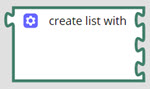

The Lists block enables you to create a list of items. For example, if you want to apply any condition or logic on a list of items, then you can use the List block.Figure 1.

If you want to add more items to the list, you can click , and drag the item to the list.Figure 2.
 , and drag the item to the list.
, and drag the item to the list.